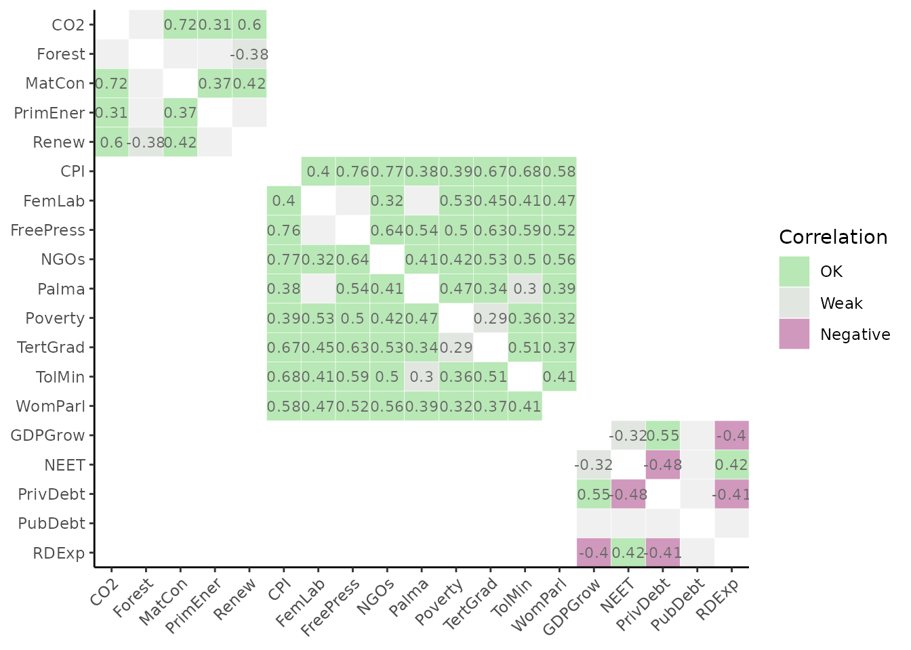
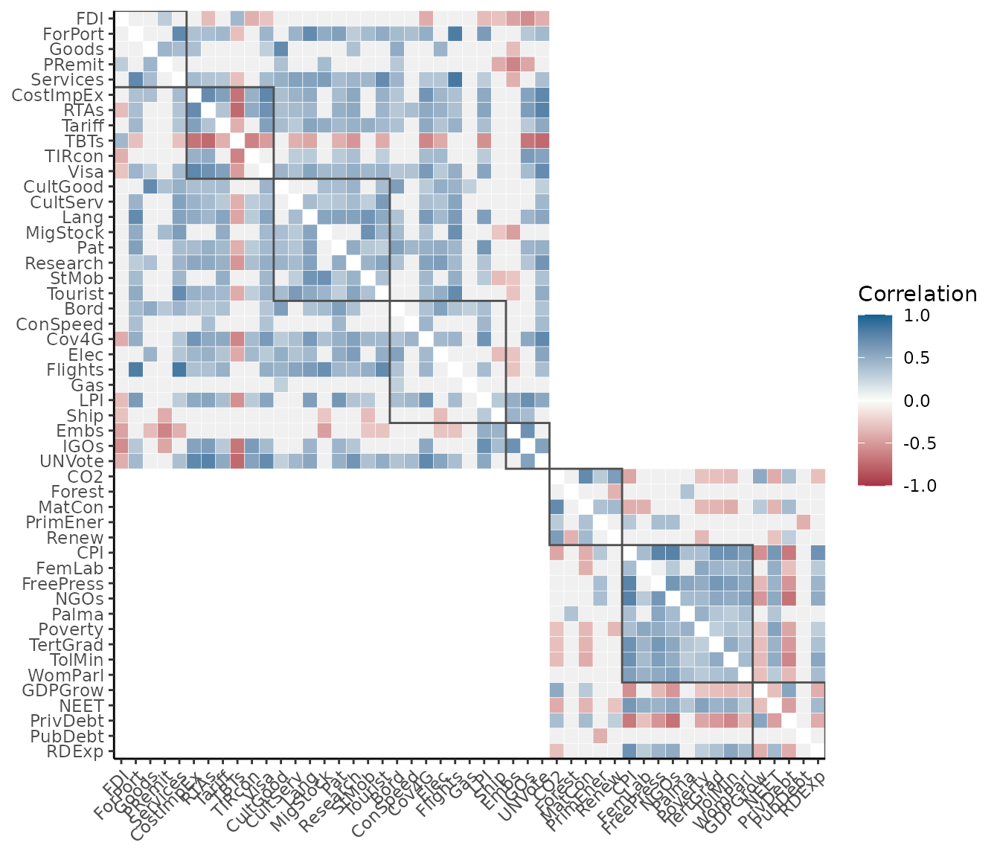

COINr has a number of options for plotting and visualising indicator data, both for analysis and presentation. All plots generated by COINr are powered by ggplot2, which means that if you want to customise them beyond the arguments provided by COINr functions, you can simply edit them with ggplot2 commands.
Note that prior to COINr v1.0.0, COINr additionally included interactive visualisation using apps and HTML widgets. This has been discontinued but those functions can still be accessed via the COINrX package. See the vignette on this topic for the reasons behind this and further details.
Framework
Upon building a coin (see the Building coins vignette), a good way to begin is to check the structure of the index. This can be done visually with the plot_framework() function, which generates a sunburst plot of the index structure.
library(COINr)
# assemble example COIN
coin <- build_example_coin(up_to = "new_coin")
# plot framework
plot_framework(coin)
The sunburst plot is useful for a few things. First, it shows the structure that COINr has understood. This allows you to check whether the structure agrees with your expectations.
Second, it shows the effective weight of each indicator. Effective weights are the final weights of each indicator in the index, as a result of the indicator weights, the parent aggregate weights, and the structure of the index. This can reveal which indicators are implicitly weighted more than others, by e.g. having more or less indicators in the same aggregation groups. The effective weights can also be accessed directly using the get_eff_weights() function.
Finally, it can be a good way to communicate your index structure to other people.
The plot_framework() function has a few options for colouring. Other than that, if you don’t like sunburst plots, another possibility is to set type = "stack":
plot_framework(coin, type = "stack", colour_level = 2)This gives a linear representation of the index. Here we have also set the colouring level to the pillar level (see plot_framework() documentation). Note that you will probably have to adjust the plot size to get a good figure.
Statistical plots
Here we explore options for statistical plots, namely distribution and correlation plots.
Distributions
The distribution of any variable, as well as groups of variables, in a coin can be visualised quickly using the plot_dist() function. The simplest case is to plot the distribution of a single indicator.
plot_dist(coin, dset = "Raw", iCodes = "CO2")To do this, as usual, we have to specify the data set (dset) and the indicator (iCodes) to plot. The data selection for plot_dist() is powered by get_data(), which means we can plot subsets of indicator and units. Commonly, with distribution plots, it might be interesting to plot the distributions of all indicators belonging to a particular group - let’s plot all indicator distributions in the “P2P” pillar:
plot_dist(coin, dset = "Raw", iCodes = "P2P", Level = 1, type = "Violindot")This plots all eight indicators belonging to that group, and we also specified to plot as “violin-dot” plots. Optionally, data can also be normalised before plotting using the normalise argument. See plot_dist() for more details and further options.
A similar function, plot_dot() also plots a single indicator using dots but is rather used for highlighting individual units rather than as a statistical plot of the distribution. See Dot plots below.
Correlations
Correlation plots are very useful for understanding relationships between indicators. COINr’s plot_corr() function is a flexible tool for plotting correlations between almost any variables in a coin, and visualising them according to the structure of the index.
One thing to keep in mind from the outset is the directionality of your indicators: if some are negative then this will probably be reflected in the correlation plots, unless you normalise the data first. With that in mind, we will build the full example coin including the normalisation step and then plot some correlations:
coin <- build_example_coin(quietly = TRUE)Now let’s do a basic plot of correlations within a group:
Notice the syntax: we have to specify iCodes as a list here, and specify the level to get data from. In this case we have specified that we want the indicators (level 1) of the “Physical” group to be correlated against each other. As usual these arguments are passed to get_data().
The reason that iCodes is specified as a list is that we can pass two character vectors to it, possibly from different levels:
plot_corr(coin, dset = "Aggregated",
iCodes = list(c("Flights", "LPI"), c("Physical", "P2P")), Levels = c(1,2))The point being that we can select any set of indicators or aggregates, and correlate them with any other set. We can also pass further arguments to get_data() such as groupings and unit selection, if needed.
Other useful features include the possibility to correlate a set of indicators with only its parent groups - this is done by setting withparent = "family". Here we also set to a discrete colour scheme using flagcolours = TRUE.
Notice that boxes are drawn around aggregation groups in this case. As a final example, we show how boxes and groups can be used to show subsets of correlation matrices. Typically the most interesting correlations are within aggregation groups because weak correlations cause less information to be transferred to the aggregate. We can only show in-group correlations using the grouplev argument, which takes an aggregation level to group indicators at:

This can also be done with the box_level argument, which can be used additionally to highlight groupings at different levels:
plot_corr(coin, dset = "Normalised", grouplev = 3, box_level = 2, showvals = F)
In this case we have also disabled correlation values themselves. Other options include using different types of correlations, and changing colours. For details, see the help page of plot_corr(). It is also worth mentioning that underneath, plot_corr() calls get_corr(), so if you are interested in correlation matrices rather than plots, use that.
Indicator plots
In this section we examine some options for visualising individual indicators, in particular with the aim of seeing how different units compare to one another.
Bar
A simple way to look at a set of scores for an indicator is with a bar chart:
plot_bar(coin, dset = "Raw", iCode = "CO2")The plot_bar() function returns a bar chart of single indicator, sorted from high to low values. We can also colour this by any of the grouping variables found in the coin
plot_bar(coin, dset = "Raw", iCode = "CO2", by_group = "GDPpc_group", axes_label = "iName")Here we have also set axes_label = "iName" to output indicator names rather than codes. Several other options are available, including a log scale, and colouring options. Here we just show one more thing, which is the possibility to break bars down into underlying component scores. This only works if we are plotting an aggregate score (i.e. level 2 or higher), rather than an indicator, because it looks for the underlying scores used to calculate each aggregate score. For example, we can see how the Sustainability scores break down into their three underlying components, for each country:
plot_bar(coin, dset = "Aggregated", iCode = "Sust", stack_children = TRUE)Dot plots
COINr’s dot plot is pretty similar to a distribution plot but is intended for showing the position of a particular unit or units relative to its peers. This means that to make it useful, you should also select one or more units to highlight.

Here we have plotted the “LPI” indicator and highlighted Spain and Japan. We can also add a statistic of this indicator, such as the median:
plot_dot(coin, dset = "Raw", iCode = "LPI", usel = c("JPN", "ESP"), add_stat = "median",
stat_label = "Median", plabel = "iName+unit")
Here we have also labelled the statistic using stat_label, and labelled the x-axis using the indicator name and unit which are taken from the indicator metadata found within the coin.
Scatter
The plot_scatter() function gives a quick way to plot scatter plots between any indicators or any variables in a coin.
plot_scatter(coin, dsets = "Raw", iCodes = c("Goods", "Services"), point_label = "uCode")
Variables can come from different data sets (including unit metadata), and we can also colour by groups:
plot_scatter(coin, dsets = c("uMeta", "Raw"), iCodes = c("Population", "Flights"),
by_group = "GDPpc_group", log_scale = c(TRUE, FALSE))Here we have also converted the x-axis to a log scale since population is highly skewed. Other options can be found in the help page of plot_scatter(), and all plots can be further modified using ggplot2 commands.